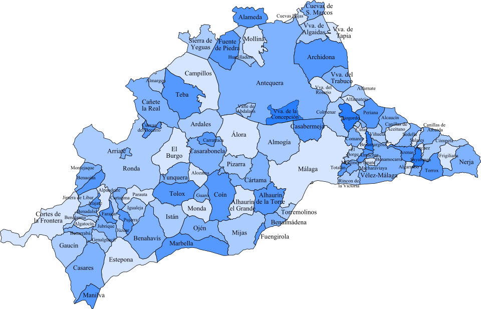

¡Comenzamos!
En este mapa puedes ver cuáles son todos los municipios que forman la provincia de Málaga.

La finalidad de este proyecto es la creación de una video presentación en la que cada pareja va explicar en inglés cómo ha pasado su fin de semana en uno de los municipios de la provincia de Málaga que os asignaré.
La creación de este proyecto se llevará a cabo en un total de 6 clases en las que seguiremos la siguiente organización:
Task 1 – Búsqueda de información sobre cada municipio (texto y fotos) (Research)
Task 2 – Elaboración de guion de la presentación (posterior corrección por el profesor) (Writing)
Task 3 – Elaboración de la presentación (texto y fotos) (Presentation)
Task 4 – Grabación del video e inclusión en la video presentación (Videopresentation)
En la apartado Timelime tenéis un cronograma en el que se detalla la distribución de las tareas y las herramientas a utilizar.
Posteriormente podéis encontrar un apartado específico para la realización de cada tarea.
¡Recuerda! que además de las herramientas que encontrarás para realizar cada tarea, si quieres seguir aprendiendo inglés de una forma divertida en este Symbaloo puedes encontrar muchos juegos en el apartado de Gamificación.
Finalmente, recuerda que la tecnología es muy útil se sabe utilizar así que siempre importante tener en cuenta estos CIBERCONSEJOS.